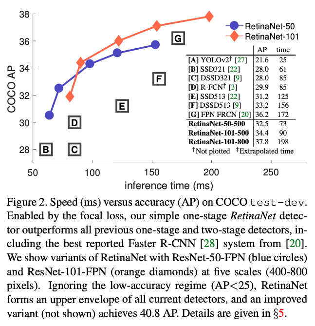

Focal Loss for Dense Object Detection
Abstract
현재까지 가장 높은 정확도를 보이는 Object detor는 Two-stage 기반의 접근 방식으로 R-CNN이 대중적이다.
Two-stage 접근 방법은 객체 영역이라고 생각되는 적은 수의 영역에만 분류기를 적용하는 방법이다.
반대로 객체가 위치할 가능성이 있는 곳에 규칙적이고 밀도있게 분류기를 적용하는 One-stage detector들은
속도가 빠르고 간단할 수 있으나 아직까지 Two-stage detector의 정확도에 미치지 못하고 있다.
우리가 왜 이런 일이 일어나는지 조사했더니 dense detector(one-stage detector)를
학습 시킬 때 데이터셋에 foreground-background class중 하나의 클래스의 수가 비교적 더 많아서
더 많은 클래스에 집중하게되는 것이 주요 원인이었다.
이에 우리는 이러한 class imbalance를 해결하기 위해 잘 학습된 예제에 대한 loss는
1보다 작은 가중치를 적용하여 그 값이 작아지도록 기존의 cross entropy loss를 변형했다.
우리의 새로운 Focal Loss는 학습하는 동안 학습하기 어려운 몇 안되는 hard example을 학습하게 하고
매우 많은 easy negatives들에 압도되어 easy negative가 학습되지 않게 하는데에 초점을 맞춘다.
우리의 loss를 효과적으로 평가하기 위해 우리는 간단한 dense detector인 RetinaNet을 만들어 학습시켰다.
Focal loss를 이용해 학습된 결과는 RetinaNet이 이전에 one-stage detector의 속도와 비슷하며
동시에 모든 Two-stage SOTA 모델들의 정확도를 능가함을 보여준다.
1. Introduction
최근 SOTA object detector들은 two-stage 제안을 기반으로하는 메카니즘을 따른다.
R-CNN framework가 대중화되면서, 첫번째 stage는 몇개의 객체가 위치할 만한 곳들을 찾아내고
두번째 stage에서는 각 위치 후보들이 foreground인지 background인지 CNN을 통해 분류한다.
몇가지 순차적인 발전을 통해서 이러한 two-stage 기반 framework는 일관적으로 COCO benchmark에 대해
월등한 정확도를 달성했다.
Two-stage detector들이 성공했음에도 자연스럽게 나오는 질문은 ‘간단한 one-stage detector가
two-stage detector의 정확도와 비슷해질 수 있을까?’ 이다.
One-stage detector들은 규칙적이고 객체 위치의 dense함 그리고 크기와 가로세로비를 통해 적용된다.
YOLO와 SSD같은 One-stage에 대한 최근 연구에서는 One-stage 방법이 two-stage SOTA의 결과가에 비해
10~40% 이내의 차이를 보인다고 한다.
이번 논문에서는 이르 더 발전시켜 우리는 처음으로 one-stage object detector가 더 복잡한 two-stage
FPN(Feature Pyramid Network)나 Mask R-CNN(변형된 Faster R-CNN)의 SOTA COCO AP를 따라잡았다.
이러한 결과를 얻기 위해서 우리는 one-stage detector가 SOTA 정확도를 따라가는데 방해하는 주요 장애물인
class imbalance를 학습하는 동안 식별하게 하고 새로운 loss function을 제안하여 이 장벽을 없앴다.
Class imbalance는 R-CNN-like detector에서 two-stage cascade와 직접 sampling함으로써 해결했다.
Proposal stage에서 대부분의 background sample들을 걸러내면서 object location에 대한 후보들이
급격하게 작은 수가 된다.
두번째 분류기 단계에서는 고정된 foreground-to-background 비율을 고정하는 sampling heuristic을
하거나 OHEM(Online Hard Example Mining)을 통해 데이터에 있는 foreground와 background의 균형을
조절한다.
반대로 one-stage detector에서는 반드시 더 많은 양의 object location후보들을 처리해야 하고
그 범위는 일반적으로 이미지 전체이다. 사실 공간적 위치, 크기와 가로세로비에 의해 dense하게 찾기 때문에
One-stage에서 candidate의 수는 보통 100k까지도 나온다. One-stage에서 Two-stage와 같이
heuristic한 sampling을 하지만, 그들은 학습 절차가 여전히 쉽게 분류되는 background 예제들 때문에
효율적이지 못하다. 이러한 비효율성은 객체 인식에서 고질적인 문제로 전형적으로 bootstrapping과 hard example mining 처리 기술로 다뤄진다.
이번 논문에서 우리는 새로운 loss 함수를 제안한다. 그 함수는 class imabalance를 다루는 이전
접근방법에 대한 대안으로 더 효과적으로 작동한다. Loss 함수는 dynamically scaled cross entropy loss
인데 True class에 대한 자신감이 높아질수록 scaling factor는 0이 되어 사라진다.

직관적으로 이 scaling factor는 자동적으로 학습하는 동안 easy example에 대한 기여를 줄이고 빠르게
hard example에 집중하게 된다. 실험적으로 우리가 제안한 Focal Loss는 높은 정확도를 갖게 학습하여
sampling heuristics나 hard example mining 같은 이전 one-stage detector에 대한
SOTA들을 훨씬 능가하는 대안임을 증명했다. 결국, 우리는 focal loss의 구체적인 형식은 중요하지 않음을
알았고 다른 예시들에서도 비슷한 결과를 달성하는 것을 보였다.
Focal loss의 효율성을 증명하기 위해 우리는 간단한 one-stage object detector인 RetinaNet을 설계했다.
이 이름은 입력 이미지로부터 object locations들에 대한 고밀도 sampling을 한다는 의미에서 RetinaNet
이라고 지었다. 이것의 설계는 효율적인 네트워크 내에 feature pyramid와 anchor boxes의 사용을 특징으로 한다.
이것은 최근 다양한 아이디어들을 바탕으로 만들어졌다. 우리의 모델 RetinaNet은 효율적이고 정확하다.
(이후 성능 비교에 대한 얘기로 우수한 성능을 보인다는 내용)

2. Related Work
Classic Object Detectors:
분류기가 dense image grid에 적용되는 Sliding-window paradigm은 길고 풍부한 역사를 갖는다.
초기에 달성한 성공들중 하나는 LeCun의 연구로 CNN을 수필 숫자 인식에 대한 연구였다.
Viola와 Jones는 boosted object detectors를 얼굴 인식에 사용해 해당 모델들의 광범위한 적용을 이끌었다.
HOG와 integral channel featues는 보행자 인식 방법에 효율성을 증진시켰다. DPMs는 확장된 dense detectors
를 도와 더 많은 일반적인 객체 범주들에 도움이 되었고 수년동안 PASCAL에서 최고의 결과를 가지고 있었다.
Sliding window 접근 방법이 고전 Computer vision에서 detection paradigm을 이끄는 동안
딥러닝이 재기하여 two-stage detectors들이 뒤를이어 빠르게 object detection을 지배하게 됐다.
Two-stage Detectors:
생략
One-stage Detectors:
생략
Class Imbalance:
옛날에 쓰던 one-stage이건 최근에 사용되는 one-stage이건 큰 class imbalance 문제를 당면한다.
이러한 detectors는 이미자당 10^4에서 10^5개의 후보지역들을 평가하지만 오직 몇개의 지역들만
객체를 포함하고 있다. 이러한 불균형은 두가지 문제들을 일으키는데 :
(1) Easy negative들이 많은 만틈 유용한 학습 신호가 반영되지 않기 때문에 비효율적이다.
(2) 한 무리가 되기 때문에 easy negative들이 학습을 주도하여 모델을 퇴화로 이끈다.
일반적인 해결방법은 몇몇 hard negative mining을 구성해 수행하는 것이다. 이것들은 학습동안
hard example을 따로 뽑거나 더 복잡한 sampling/weighing schemes를 한다.
반대로 우리는 우리가 제안한 focal loss가 알아서 one-stage 로써 당면한 class imbalance를
다루는 모습을 보여주고 이것이 모든 example에 대해 별도의 sampling 없이 그리고 easy negative
overwhelming the loss와 computed gradients없이 효율적으로 학습하는 것을 보여줄 것이다.
Robus Estimation:
Huber loss처럼 robust한 loss function을 설계하는 데에 많은 관심이 있었다.
robust한 loss function은 outlier들의 가중을 줄여 loss에 기여하는 정도를 줄임으로써 만들어졌다.
반대로 우리의 focal loss는 outlier를 다루기보다 inlier의 가중을 줄여 class imbalance를
처리하도록 설계되었다. 따라서 easy example의 수가 아무리 많더라도 그들이 전체 loss에 관여하는 비율이
적도록 하였다. 다시말해 focal loss는 몇 없는 hard example을 학습하는데에 초점을 두기 때문에
focal loss는 robust loss의 반대로 작동한다고 볼 수 있다.
Focal Loss
Focal Loss는 one-stage object dtector가 학습 단계에서 foreground와 background class
사이에서 극심한 불균형을 마주하는 경우 이를 잘 해결하도록 설계되었다.
우리는 Focal loss를 binary classification에 사용되는 Cross Entropy(CE) loss에서부터
설명하려 한다.
위에서 $y\in \{ \pm 1 \}$ 는 ground-truth class를 나타내고 $p\in[0,1]$ 은 모델이 $y=1$클래스에 대해 예측한 확률값이다. 표기의 편의를 위해 앞으로 $p_t$를 아래와 같이 정의한다.
\[\begin{align} \begin{cases} p & \mbox{if }y=1 \\ 1-p & \mbox{otherwise}, \end{cases} \end{align}\]그리고 $\mathbf{CE}(p,y)=\mathbf{CE}(p_t)=-\log(p_t)$ 라고 다시 쓸 수 있다. CE loss는 아래 에서 파란색 커브처럼 보여진다.
위 그림을 통해 이 loss에서 한가지 알아둬야 할 특성은 쉽게 분류된($p_t\gg .5$) example일지라도
non-trivial magnitude로 인해 loss가 발생할 수 있다. 쉬운 example들을 더할 때
이 작은 loss 값들이 모여서 rare class를 overwhelm 할 수 있다.
3.1. Balanced Cross Entropy
Class imbalance를 처리하는 통상적인 방법은 weighting factor $\alpha$를 사용하는 것이다.
$\alpha\in[0,1]$는 class 1(True)을 위해서
$1-\alpha$는 class -1(False)을 위해서 사용된다.
실제로 $\alpha$는 종종 inverse class에 의해 설정되거나 cross-validation을 통해 hyperparameter 처럼 사용될 수 있다.
표기의 편의를 위해 이전에 $p_t$를 정의 했던 방법으로 $\alpha_t$를 정의하겠다.
따라서 아래처럼 $\alpha$-balanced CE loss를 정의한다.
이 loss는 우리가 제안한 focal loss의 실험적 기반으로 사용된 CE를 간단히 확장시킨 것이다.
3.2. Focal Loss Definition
우리는 실험을 통해 dense detector를 사용해 학습하는 도중에 당면한 class imbalance의 정도가 심할수록
cross entropy loss를 지배하는 것을 보일것이다. 쉽게 분류된 negative들은 loss의 대부분을 구성하고
gradient를 지배한다. $\alpha$의 균형이 positive/negative example들에게 중요하지만
그렇다고해서 $\alpha$가 easy/hard example들을 구별하지는 않는다. 우리는 그렇게 하기보다 쉬운 예제들은
그 값을 낮춤으로써 hard negative들을 학습하는데에 초점을 맞추도록 했다.
더 자세하게 말하면 우리는 modulating factor $(1-p_t)^\gamma$를 cross entropy loss에 추가했다.
여기서 $\gamma$는 $\gamma\ge0$으로 조작 가능한 focusing parameter이다.
따라서 focal loss를 아래와 같이 정의한다.
Focal loss는 $\gamma\in[0,5]$ 에 해당하는 몇가지 값들을 Figure 1에 시각화 했다.
우리는 Focal loss의 특징을 두가지로 말한다.
(1) example이 잘 분류되지 않고 $p_t$가 작을 때, modulating factor는 1에 가깝게되어 loss가
그의 영향을 받지 않게 한다. 그리고 $p_t\to1$가 되면 modulating factor가 0이 되어 잘 분류된
example에 대한 loss가 작아진다.
(2) Focusing parameter $\gamma$는 easy example의 값이 줄어드는 비율을 조절한다.
$\gamma=0$이면 FL은 CE와 같고 $\gamma$가 증가하게 되면 modulating factor의 영향도 커지게 된다.
우리가 찾은 바로는 $\gamma=2$인 경우가 실험적으로 제일 좋았다.
직관적으로 modulating factor는 easy example로부터 발생한 loss 비율을 줄이고 낮은 loss를 받는
예제들의 범위를 확장시킨다. 예를 들어 $\gamma=2$인 경우, $p_t=0.9$로 분류된 예제는 CE와 비교해
100배나 낮은 loss를갖고 만약 $p_t\approx0.968$의 확률을 갖는다면 1000배 낮은 loss를 얻게 된다.